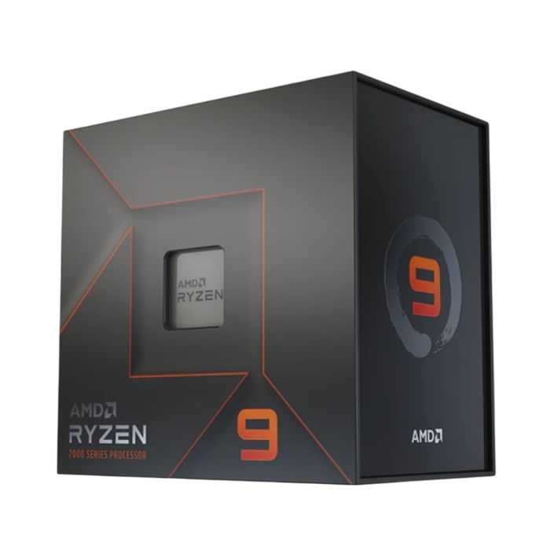
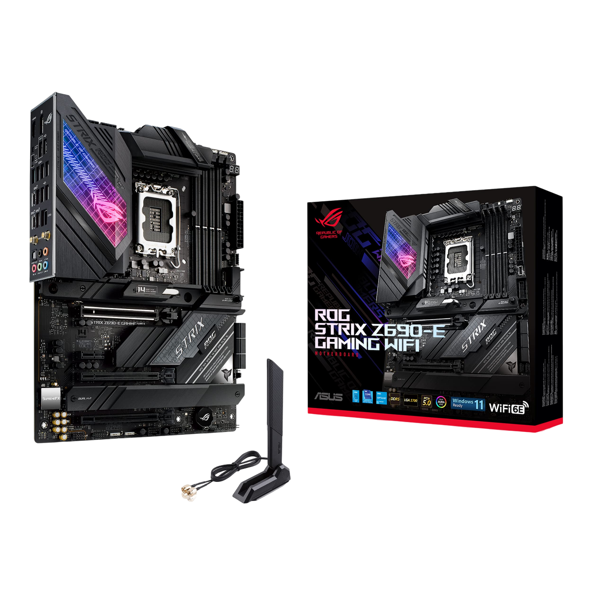
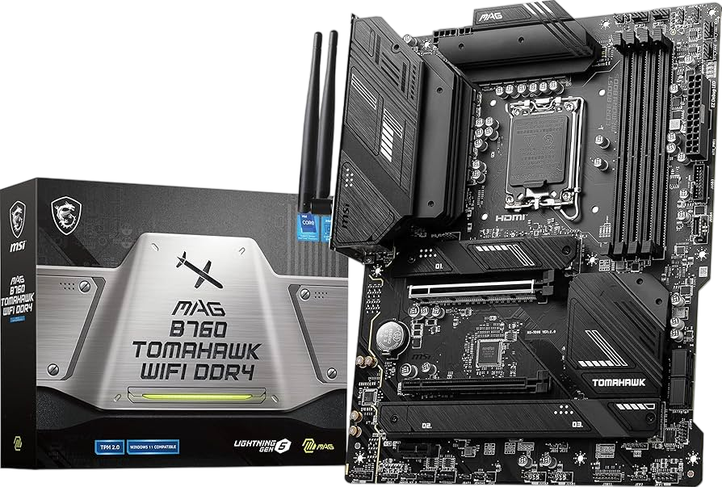
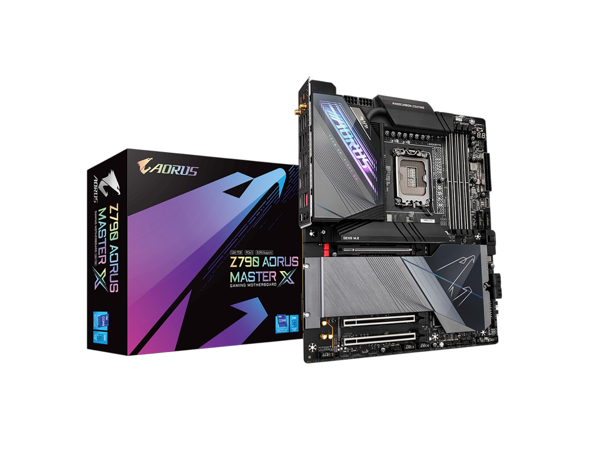
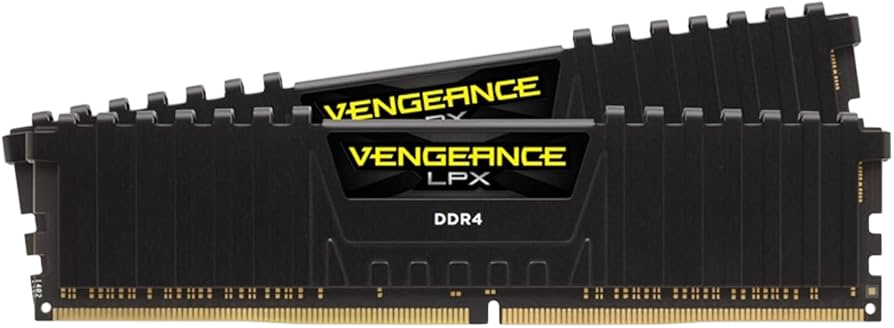
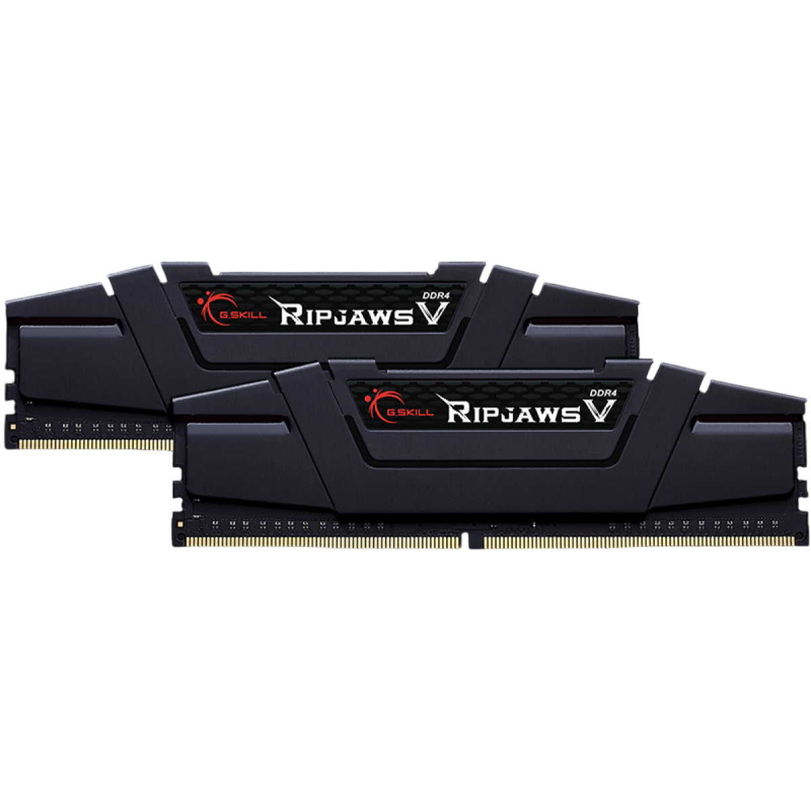
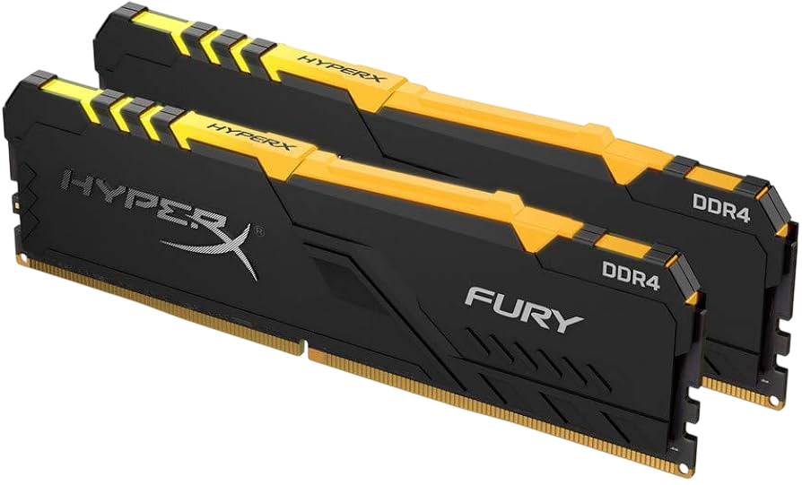

Bem-vindo à Infotech, seu site de pesquisa online especializado em peças de computador de alta performance! Aqui, você encontra os melhores componentes para montar ou atualizar o seu PC, seja para gaming, trabalho profissional, ou produção de conteúdo. Aqui você encontrará as principais marcas do mercado, oferecendo processadores, placas de vídeo, memória RAM, SSDs, placas-mãe e muito mais, sempre com qualidade e tecnologia de ponta.
Seja você um entusiasta de tecnologia ou um profissional em busca do melhor desempenho, a Infotech tem o que você precisa. Com pesquisas precisas, garantimos a melhor experiência na hora de escolher suas peças. Monte o PC dos seus sonhos com a Infotech e aproveite o melhor da tecnologia no seu setup!
Processadores
Intel:

O Intel Core i9-13900K é um processador topo de linha da 13ª geração "Raptor Lake", com 24 núcleos (8 de alto desempenho e 16 de eficiência) e 32 threads, oferecendo excelente desempenho em multitarefa e aplicações pesadas. Ele pode alcançar até 5,8 GHz em modo turbo, sendo ideal para gaming, edição de vídeos e renderização. Suporta DDR5, PCIe 5.0 e overclock, proporcionando alta flexibilidade de desempenho. No entanto, devido ao seu consumo de energia elevado (125W de TDP), exige um bom sistema de refrigeração. O i9-13900K é perfeito para quem busca potência máxima em tarefas exigentes.
Veja uma Review deste produto:
AMD:
O AMD Ryzen 9 7950X é um processador topo de linha da série Ryzen 7000, baseado na arquitetura Zen 4 (5nm). Ele possui 16 núcleos e 32 threads, oferecendo desempenho excepcional para multitarefas, jogos e aplicações profissionais. Com um clock que pode atingir até 5,7 GHz no modo turbo, é ideal para gaming, edição de vídeos e renderização 3D.
Além disso, o Ryzen 9 7950X suporta memórias DDR5, PCIe 5.0 e overclock, garantindo compatibilidade com as tecnologias mais recentes. No entanto, devido ao seu TDP de 170W, é recomendável um sistema de refrigeração eficiente para melhor desempenho térmico. O Ryzen 9 7950X é a escolha perfeita para quem busca máxima potência e performance de ponta.
Veja uma Review deste produto:
Placas-mãe (Motherboard)
ASUS:
A ASUS ROG Strix Z690-E Gaming WiFi é uma placa-mãe premium para processadores Intel de 12ª geração, oferecendo suporte a memórias DDR5 e PCIe 5.0. Ela conta com conectividade Wi-Fi 6E, várias portas USB e slots M.2 para armazenamento rápido. Seu design robusto permite overclocking estável e inclui soluções de dissipação de calor eficientes. Além disso, a iluminação RGB personalizável e a compatibilidade com Aura Sync oferecem um toque visual único. Ideal para gamers e entusiastas, essa placa-mãe maximiza o desempenho e a conectividade de sistemas de alta performance.
Veja uma Review deste produto:
MSI:
A MSI MAG Z690 TOMAHAWK WIFI é uma placa-mãe de alto desempenho para processadores Intel de 12ª geração, com suporte a memórias DDR5 e PCIe 5.0. Ela oferece conectividade Wi-Fi 6E, várias portas USB e slots M.2 para armazenamento rápido. Seu design robusto e sistema de dissipação térmica garantem estabilidade em overclocking. Além disso, conta com iluminação RGB personalizável e compatibilidade com Mystic Light. Ideal para gamers e entusiastas, ela combina performance, conectividade e estilo em uma única solução.
Veja uma Review deste produto:
Gigabyte:
A Gigabyte Z690 AORUS Master é uma placa-mãe de alto desempenho para processadores Intel de 12ª geração, com suporte a memórias DDR5 e PCIe 5.0. Ela oferece conectividade Wi-Fi 6E, várias portas USB e slots M.2 para armazenamento rápido. Com uma solução de alimentação de 18+1 fases e dissipação térmica avançada, garante estabilidade mesmo em overclocking. A iluminação RGB personalizável, compatível com RGB Fusion 2.0, adiciona estilo ao setup. Ideal para quem busca performance, conectividade e estética em um único produto.
Veja uma Review deste produto:
Memórias RAM
Corsair:
A Corsair Vengeance LPX 16GB (2x8GB) DDR4 3200MHz é uma memória RAM de alto desempenho, ideal para quem busca performance em jogos e aplicações intensivas. Com 16GB de capacidade (2 módulos de 8GB), ela oferece uma frequência de 3200MHz, garantindo um excelente equilíbrio entre velocidade e estabilidade. Seu design compacto e baixo perfil é perfeito para montagens em sistemas com espaço limitado, enquanto seu dissipador de calor em alumínio ajuda a manter a temperatura sob controle mesmo em sessões de uso intenso. Compatível com uma ampla gama de placas-mãe, a Vengeance LPX é a escolha certa para quem deseja aumentar o desempenho do seu PC, sem abrir mão de confiabilidade e durabilidade. Perfeita para gamers, criadores de conteúdo e entusiastas, essa memória oferece a combinação ideal de performance e custo-benefício.
Veja uma Review deste produto:
G.SKILL:
A G.SKILL Ripjaws V 16GB (2x8GB) DDR4 3600MHz é uma memória RAM de alto desempenho, projetada para oferecer uma experiência superior em jogos e tarefas exigentes. Com 16GB de capacidade total (2 módulos de 8GB), ela opera a uma frequência de 3600MHz, proporcionando um ganho significativo em velocidade e resposta do sistema. Seu design robusto e elegante, com dissipadores de calor em alumínio, não só melhora a dissipação térmica, mas também adiciona um toque de estilo ao seu PC. A Ripjaws V é compatível com uma ampla gama de placas-mãe e suporta overclocking, permitindo que você extraia o máximo desempenho do seu sistema. Ideal para gamers, criadores de conteúdo e entusiastas, ela oferece a combinação perfeita de performance, confiabilidade e estética, elevando o desempenho do seu computador de forma eficiente e acessível.
Veja uma Review deste produto:
KINGSTON:
A Kingston HyperX Fury 16GB (2x8GB) DDR4 3200MHz é uma memória RAM de alta performance, ideal para quem busca uma experiência ágil e eficiente em jogos e multitarefas. Com 16GB de capacidade (2 módulos de 8GB), ela oferece uma frequência de 3200MHz, proporcionando uma resposta rápida e fluida para sistemas que exigem alta largura de banda. Seu design arrojado, com dissipadores de calor em alumínio, garante uma excelente dissipação térmica, mantendo o sistema estável mesmo sob cargas de trabalho intensas. A HyperX Fury é fácil de instalar e é compatível com diversas placas-mãe, além de suportar overclocking automático, permitindo que você otimize o desempenho de forma simples e eficaz. Perfeita para gamers, criadores de conteúdo e entusiastas, a Kingston HyperX Fury combina velocidade, confiabilidade e um ótimo custo-benefício, oferecendo a performance necessária para elevar o seu sistema a um novo nível.